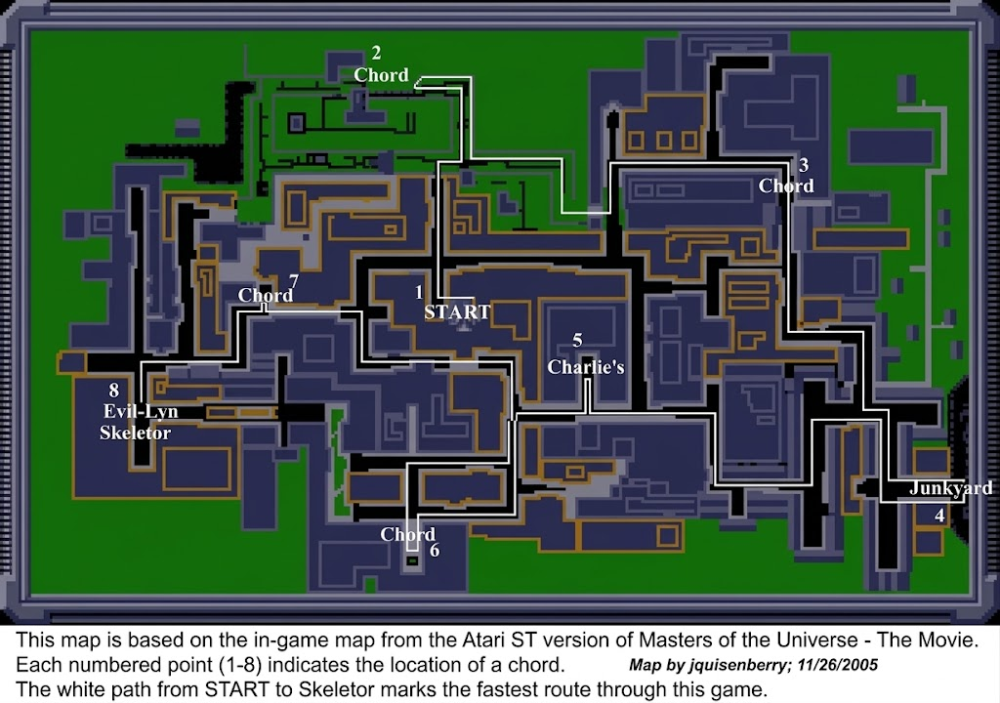

Video Game Documents
Walkthroughs, strategy guides, and maps.
Amazon Luna
MOTU Legends Unite: He-Man Solo Strategy Guide
Atari ST

Masters of the Universe: The Movie map
DSi
Dekisugi Tincle Walkthrough